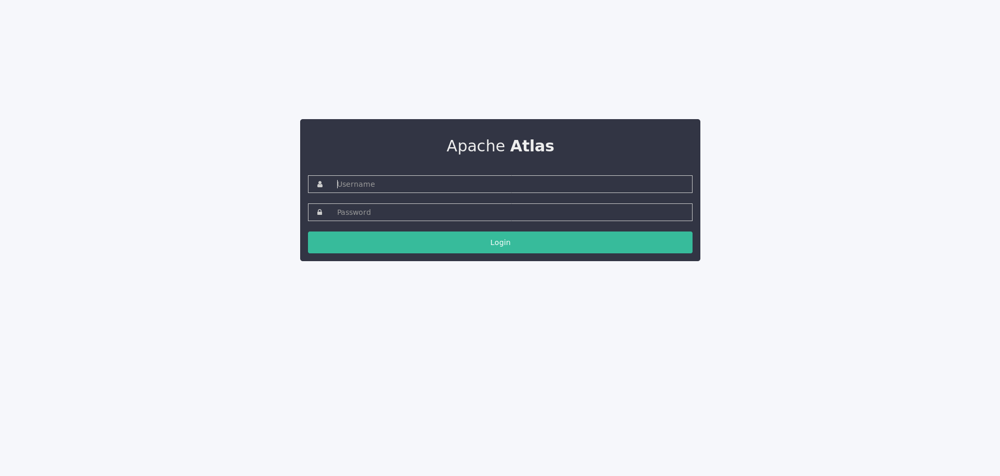
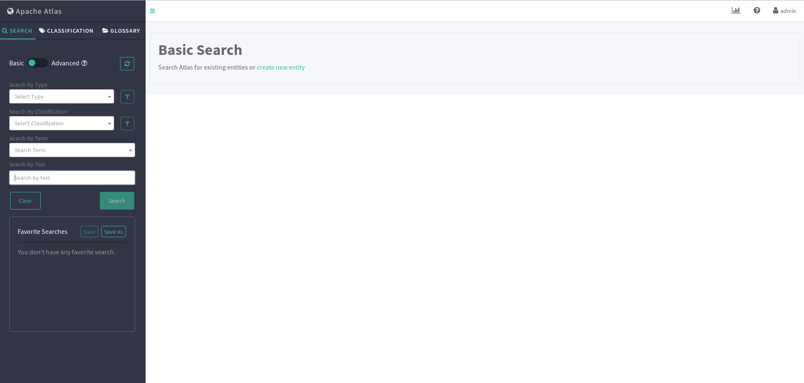
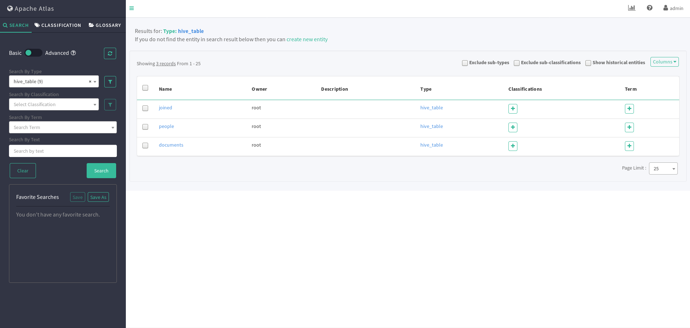
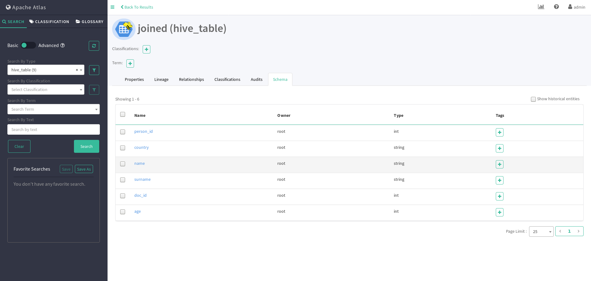
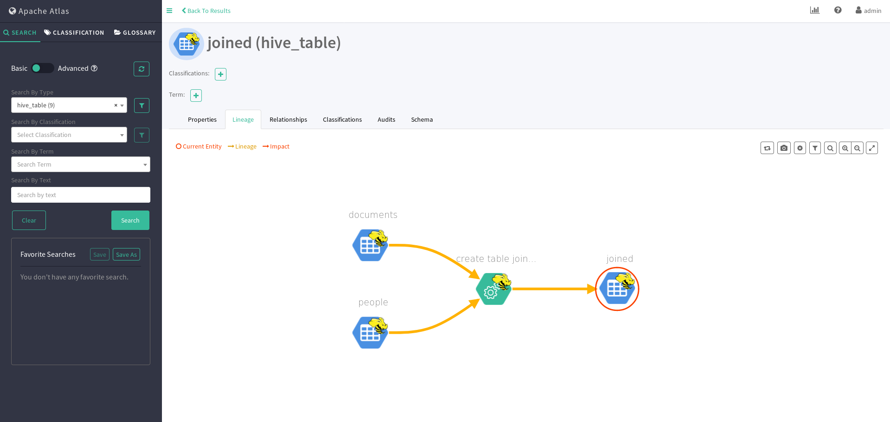

Since I have always been interested in (and mainly working with) Semantic Web technologies and knowledge engineering, metadata is a topic I care about quite a lot. "Metadata" means "data about data", which practically speaking may include the format, the source, the purpose, the author, the creation date, and many other aspects of some given data. Many languages and tools have been proposed to make the inclusion and management of metadata easier, but only recently there has been a renewed interest in metadata from a Big Data perspective; in fact, given the vast number of data sources and processes that a Big Data architecture might have to manage, a scalable tool for metadata management and governance was much needed. Enter Apache Atlas.
From its homepage:
Apache Atlas provides open metadata management and governance capabilities for organizations to build a catalog of their data assets, classify and govern these assets and provide collaboration capabilities around these data assets for data scientists, analysts and the data governance team.
In short, Atlas is a tool that adds metadata management features (descriptions, classifications, controlled vocabularies, tagging, search, and so on) to a Hadoop-based data environment (such as Hive) through bridges, hooks (for automated updates) and an easy-to-use UI.
So far, Atlas has mostly been used and deployed with the Hortonworks Data Platform (HDP) and, recently, added to AWS as an Amazon EMR template. Since I wanted to look at its latest version and install it vanilla, this article will be different from the previous ones in that I will write about a more widely used project and, being it a bit lacking in documentation, my main focus will be to make it work rather than providing many examples. I will then take the chance to touch on another nice Apache project, Bigtop.
In the following, I will use CentOS 7 as the underlying operating system. If you are not already using it, you can either install it on a virtual machine using your favourite VM tool, or use a Docker image.
Installing Bigtop
Apache Bigtop is a comprehensive Big Data package, offered both as a downloadable archive and as an RPM repository. Its intent is to make the installation and management of Big Data tools easy. Although being actively developed, it is not as up-to-date as other commercially-backed solutions; this means that Bigtop components are often a few versions behind their standalone counterparts. Since this article is about Atlas, this will not be an issue as we do not need the latest version of any of the components.
In order to use Bigtop and to have Hadoop and Hive available as CentOS RPM packages, we need to install the Bigtop repository by downloading the bigtop.repo file into the /etc/yum.repos.d/ folder on our CentOS environment.
Installing Hadoop and Hive
Our first step will be to have a working Hadoop environment, with Hive on top of it. With the Bigtop repository now available, we can install Hive (and the other components it depends on) with:
$ yum install hive hive-metastore hive-server2
Since this is a "development" installation, we will use the embedded Derby database as Hive metastore; for a production environment, a fully-fledged DBMS such as PostgreSQL or MySQL should be used.
In order to initialize the metastore, we need to:
- Find where the Derby DB will be located; it should be
/var/lib/hive/metastore/metastore_db, or anyway the value of thejavax.jdo.option.ConnectionURLproperty in thehive-site.xmlfile (likely located under/etc/hive/conf/). -
Go to the parent folder of the metastore root folder (in our case
/var/lib/hive/) and run the following command as root:$ /usr/lib/hive/bin/schematool -initSchema -dbType derby
If we want to use another user or to change the location of the Derby DB, we need to update the
hive-site.xmlaccordingly. -
Launch
hive-metastoreandhive-server2with:$ sudo service hive-metastore start $ sudo service hive-hiveserver2 start
-
Try running a Hive query, for instance:
sudo hive -e "show databases;"(
sudois necessary if we performed the previous operations as root).
If everything ran successfully, we should see something like this:
OK
default
Time taken: 8.111 seconds, Fetched: 1 row(s)
surrounded by other log lines. If the Hive query fails with an exception related to access rights, we might need to execute the following operations:
$ hdfs dfs -mkdir /tmp
$ hdfs dfs -mkdir /user/hive/warehouse
$ hdfs dfs -chmod g+w /tmp
$ hdfs dfs -chmod g+w /user/hive/warehouse
Installing Atlas
Java environment
In order to install Atlas, let's first of all make sure that Java 8 is installed:
$ java -version
It is important here that the Java version be 8, because full compatibility with newer versions is not guaranteed. If the installed version of Java is not 8, we need to install Java 8 alongside; then, in the following, we have to replace the java command with the full path of the Java 8 binary (e.g. /usr/lib/jvm/java-1.8.0/jre/bin/java) or take advantage of the alternatives tool (as explained for example here).
After this, let's make sure that the environment variable JAVA_HOME is initialized:
$ echo $JAVA_HOME
If the result is an empty string, we need to initialize it with a command such as this one:
$ export JAVA_HOME=/usr/lib/jvm/java-1.8.0-openjdk-1.8.0.212.b04-0.el7_6.x86_64/
using whatever path leads to our Java SDK (not JRE) home folder. It is not needed to add this line to the .bashrc file if all the steps are performed from the same terminal within the same session, although it would be still useful to do so.
Installing Maven
Let's now install Maven, which is roughly to Java what pip is to Python. The version we will need in order to build Atlas correctly is at least the 3.5, and likely the CentOS 7 distribution we are using only provides an older version. If that is the case (and it can be found out by trying to run sudo yum install maven and looking at the version of the package), we need to:
-
Add the Software Collections repository to
yum:$ sudo yum install centos-release-scl
-
Install the
rh-maven35package:$ sudo yum install rh-maven35
-
Open a shell in the environment containing the installed package:
$ scl enable rh-maven35 bash -
Check the Maven version:
$ mvn --version
If everything worked correctly, Maven 3.5 should be available in the new shell. This environment will only be needed to compile and build Atlas, after which it can be closed.
Building Atlas
Now we can download Atlas from the download page and decompress it in a folder of our choice:
$ tar zxvf apache-atlas-2.0.0-sources.tar.gz
$ cd apache-atlas-sources-2.0.0
In order to run Atlas in the simplest way, we will build it with both Apache Cassandra (the underlying database) and Apache Solr (the underlying search engine) as embedded services; in a production environment, the two services would be configured each on its own. Let's run this command:
$ mvn clean -DskipTests package -Pdist,embedded-cassandra-solr
and wait until it completes successfully, after which we run:
$ cd ..
$ tar zxvf apache-atlas-sources-2.0.0/distro/target/apache-atlas-2.0.0-server.tar.gz
$ cd apache-atlas-2.0.0
We are now in the main Atlas folder, from which we can launch the Atlas server:
$ bin/atlas_start.py
then open the browser on http://localhost:21000 and presto! Atlas is available and ready for our experiments.

The default credentials are admin / admin.

We can also run a "quick start" script from the same folder and populate Atlas with some example data:
$ bin/quick_start.py
and start exploring the tool.
Installing the Hive hook
Now that Atlas is up and running, we need to let Atlas "know" about Hive metadata and listen for changes. First of all, let's make the Hive hook available to Atlas:
$ tar zxvf ../apache-atlas-sources-2.0.0/distro/target/apache-atlas-2.0.0-hive-hook.tar.gz
$ mv apache-atlas-hive-hook-2.0.0/* .
$ rm -rf apache-atlas-hive-hook-2.0.0/
Because of a bug, some JAR files need to be copied manually:
$ cp ../apache-atlas-sources-2.0.0/webapp/target/atlas-webapp-2.0.0/WEB-INF/lib/jackson-jaxrs-base-2.9.8.jar hook/hive/atlas-hive-plugin-impl
$ cp ../apache-atlas-sources-2.0.0/webapp/target/atlas-webapp-2.0.0/WEB-INF/lib/jackson-jaxrs-json-provider-2.9.8.jar hook/hive/atlas-hive-plugin-impl
$ cp ../apache-atlas-sources-2.0.0/webapp/target/atlas-webapp-2.0.0/WEB-INF/lib/jackson-module-jaxb-annotations-2.9.8.jar hook/hive/atlas-hive-plugin-impl
This is enough from Atlas side; now we need to configure Hive as well so that it knows where to send data to Atlas when a change occurs. First of all we need to initialize the HIVE_HOME environment variable:
$ export HIVE_HOME=/usr/lib/hive
Then, we need to copy (or create a symlink to) the Atlas configuration files into Hive configuration folder:
$ cp conf/atlas-application.properties /etc/hive/conf/
and to update the /etc/hive/conf/hive-site.xml adding this content:
<property>
<name>hive.exec.post.hooks</name>
<value>org.apache.atlas.hive.hook.HiveHook</value>
</property>
then, finally, to add the following line to /etc/hive/conf/hive-env.sh:
export HIVE_AUX_JARS_PATH=<atlas package>/hook/hive
Hive-Atlas connection
We are now ready to check that Hive can actually send information to Atlas. Let's launch the Hive CLI (with sudo if the Derby DB was initialized as root):
$ hive
and run the following commands to create a test database and a people table with some data:
hive> create database test;
hive> use test;
hive> CREATE TABLE people (name string, surname string, age int, person_id int);
hive> INSERT INTO TABLE people VALUES ("John", "Smith", 30, 1);
hive> INSERT INTO TABLE people VALUES ("Jack", "Smith", 32, 2);
hive> INSERT INTO TABLE people VALUES ("Jane", "Doe", 22, 3);
and let's run a SELECT query to check that the data has been inserted correctly:
hive> SELECT * FROM people;
If everything ran correctly, we should see something like this:
OK
Jane Doe 22 3
John Smith 30 1
Jack Smith 32 2
Time taken: 9.918 seconds, Fetched: 3 row(s)
Now we can add another table with some more data:
hive> CREATE TABLE documents (person_id int, doc_id int, country string);
hive> INSERT INTO TABLE documents VALUES (2, 1, "US");
hive> INSERT INTO TABLE documents VALUES (3, 2, "US");
hive> INSERT INTO TABLE documents VALUES (1, 3, "UK");
and, finally, a new table from a JOIN across the two tables just created:
hive> CREATE TABLE joined AS (SELECT * FROM people JOIN documents USING (person_id));
As a check, we can run another SELECT query:
hive> SELECT * FROM joined;
and verify that the output is like the following:
OK
3 Jane Doe 22 3 UK
1 John Smith 30 1 US
2 Jack Smith 32 2 US
Time taken: 0.297 seconds, Fetched: 3 row(s)
During this session we might receive this warning:
(WARNING: Hive-on-MR is deprecated in Hive 2 and may not be available in the future versions. Consider using a different execution engine (i.e. spark, tez) or using Hive 1.X releases.)
We do not need to worry about it, because this is related to the way Hive runs. From the point of view of Atlas, it does not make any difference.
Let's check if Atlas is aware of these changes by selecting hive_table in the Search by type dropdown menu.

The three tables can be seen in the main section, and for each of the tables we can see useful information such as their schema:

and their lineage:

which we will expand upon in another article.
Conclusions
In this article we saw how to install Apache Atlas from scratch (a not-so-straightforward process) and how to configure Hive hooks in order to automatically send changes in the Hive metastore to Atlas. In another article we will look a bit deeper into Atlas capabilities and we will see how to configure more data sources.